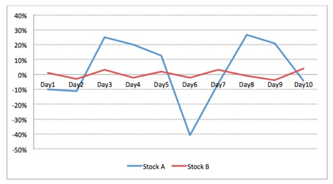

Risk & Return - Sides of the same coin
There is an inherent relationship between risk and return. High returns can’t be achieved without
taking appropriate risks. If you read autobiographies of any of the people who made it big in their
lives, you would realize that all of them would have taken appropriate risks at different points of
time. Same thing applies in the financial world also. Any rational person will be willing to take
more risk, only if it comes with a promise of better returns. Let’s start our discussion with an example.
Horse betting is a game loved by many across the globe. It’s a fun game and if you are lucky, you
can make some quick bucks. Let’s assume there are 10 horses participating in a race and we need
to place our bet on one of them.
| horse 1 | horse 2 | horse 3 | horse 4 | horse 5 | horse 6 | horse 7 | horse 8 | horse 9 | horse 10 | |
|---|---|---|---|---|---|---|---|---|---|---|
| Multiplication Factor | 21 | 15 | 8 | 9 | 36 | 42 | 3 | 99 | 81 | 55 |
Above table lists the multiplication factors of each of the 10 horses. Multiplication factor
represents the factor applied to your investment, if you win the bet. So if you put INR 30 on Horse
3 and it wins the race, you would receive INR 240 – your money will grow 8 times the initial
investment. Let’s try to answer why the multiplication factors of horses are different. The horse
with highest number of wins in the past will have the lowest factor, because it’s most likely that it
will win the race again (low risk, low return). The horse with lowest number of wins will have the
highest factor, as probability of it winning the race is low (high return, high risk). So if you bet INR
1000 on horse 10 and it wins the race, you would make INR 49,000 in just few minutes. You are
rewarded more, because you took a risky and unlikely bet. It doesn’t mean that you should take
risky bets. It means that if you take risky bets and win, you would be rewarded more.
Horse 7 has the lowest multiplication factor, as it has historically been most consistent in winning
races. We can say that its performance is less volatile. On the other hand, Horse 8 has very high
multiplication factor, as its performance has been very inconsistent in the past. We can say that
the performance of Horse 8 is very volatile. If we were betting on stocks instead of horses, then
these multiplication factors would represent expected returns. As discussed, betting on horse 7
was less risky due to its consistent nature, similarly betting on stock 7 would be less risky, due to
its low volatility. But the return that can be expected from this stock would also be low. Generally,
more volatile the returns (performance) of a security are, more risky it is.
The concept becomes clearer in the chart below.

We have plotted the daily return of two stocks (A,B). We can clearly say that stock B is less volatile,
more stable and less risk than stock A. With stock A, we can end up making as high as 28% in a
given day or as low as -40%. With stock B, this range shrinks to -6% to 5%. With stock B, our
returns are more stable and we lose less when the market falls. But at the same time, we gain less
when the market rises, as we had avoided taking that risk.